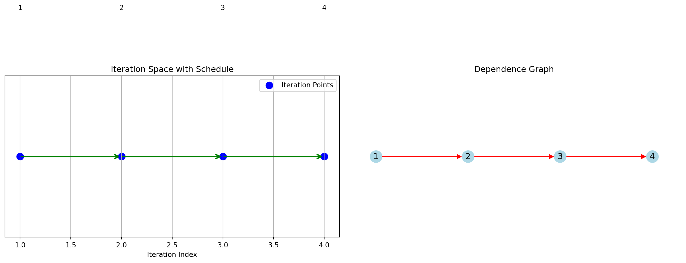
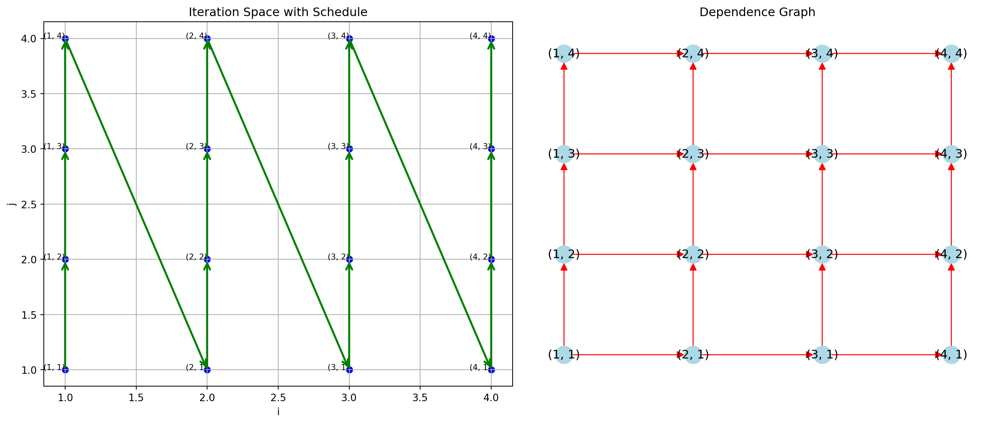
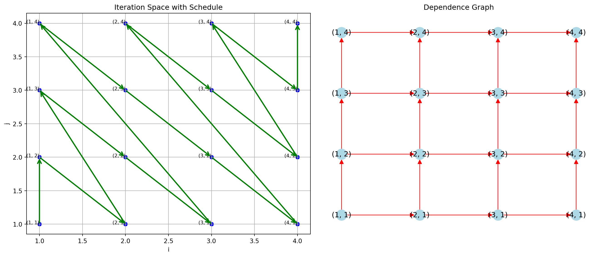
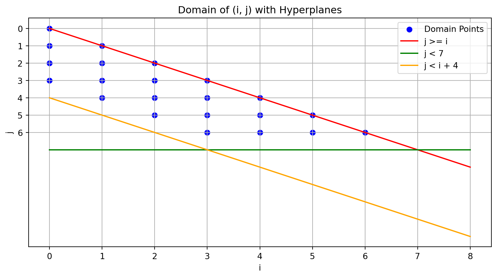
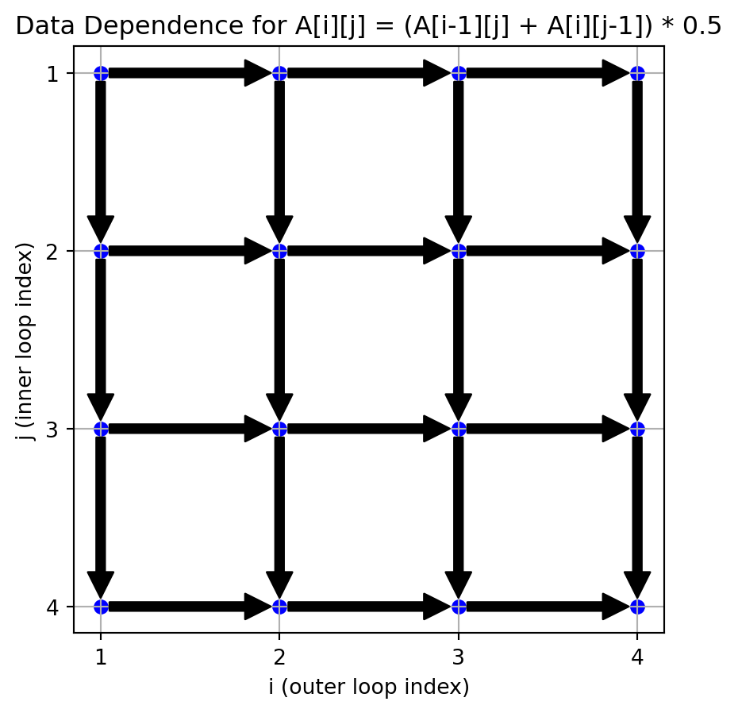
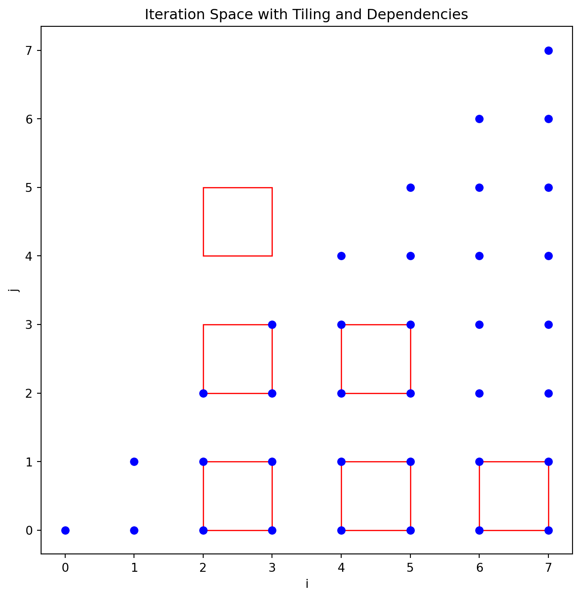

Code
Schedule: [1, 2, 3, 4]
Why Polyhedral Methods?
Modern programs, especially in high-performance computing (HPC), GPU programming, and scientific applications, often rely on loops for performance-critical tasks.
However, traditional compiler techniques struggle with:
Polyhedral methods address these challenges by providing a precise mathematical framework for analyzing and optimizing loop nests.
Consider this loop:
for (i = 0; i < N; i++)
for (j = 0; j < N; j++)
A[i][j] = A[i-1][j] + A[i][j-1];Transforming this loop into smaller tiles can improve cache reuse and enable parallelism, yielding significant performance gains.
Polyhedral methods apply to affine loops with:
Polyhedral Analysis:
Polyhedral Scheduling:
In this lecture, we focus on polyhedral analysis
Mathematical Rigor: Use affine constraints to model and manipulate loops precisely.
Advanced Optimizations: Enable transformations like:
In a loop, a statement executes multiple times. Each execution is called an instance of the statement, and polyhedral methods track these instances explicitly.
Program Representation:
A program has two key components:
Problem: Can we reverse this loop’s execution order?
for i = [1,2,3,4]
s: a[i] = a[i-1]Original schedule: i = 1, 2, 3, 4
Reversed schedule: i = 4, 3, 2, 1
Do these loops produce the same result?
for i = [1,2,3,4] for i = [4,3,2,1]
s: a[i] = a[i-1] s: a[i] = a[i-1] | Original Order | Reversed Order |
|---|---|
| Instance s(1): Reads a[0], Writes a[1] | Instance s(4): Reads a[3], Writes a[4] |
| Instance s(2): Reads a[1], Writes a[2] | Instance s(3): Reads a[2], Writes a[3] |
| Instance s(3): Reads a[2], Writes a[3] | Instance s(2): Reads a[1], Writes a[2] |
| Instance s(4): Reads a[3], Writes a[4] | Instance s(1): Reads a[0], Writes a[1] |
Dependency Analysis
Original schedule: (1 → 2), (2 → 3), (3 → 4)
Does the reversed order respect these dependencies?
Schedules:
A schedule is a function:
sc(iteration) = execution order(time)
Example:
Original order: sc(i) = i Reversed order: sr(i) = 5 - i
Key Idea: Producers (e.g., s[i]) must execute before consumers (e.g., s[j]) for the transformation to be valid.
A transformation is valid if it preserves dependency relations: Producers must execute before their consumers.
Example: Reversed Schedule Validity
Dependency between s[1] (producer) and s[2] (consumer):
In the reversed schedule:
sr(2) < sr(1) (3 < 4) → Invalid!
s[2] depends on a[1], but s[1] writes a[1].
not valid: if there is a pair s[i] and s[j], s[i] produces a value, s[j] reads that value, and s[j] is first in the new schedule
find an i,j where sr(i) < sr(j) : i executes first
i reads a value and j writes that value
forward order
not legal if there is a pair where the arrows go in opposite directions
observation 2- different schedules. instance -> time
\[ \begin{align*} left \ schedule &= \left\{ s[i] \rightarrow i \right\} \\ right \ schedule &= \left\{ s[i] \rightarrow 5-i \right\} \end{align*} \]
data dependences (just the same as before but with bounds) \[ dependence = \left \{(s(i), s(i+1)) \mid 1<= i <= 3 \right \} \]
New schedule is legal, if it respects all data dependences, or set of violated data dependences is empty
a pair (p, c) where p produces data that c consumes and c comes before p in the new schedule
data dependence \[ \left \{(s(i), s(i+1)) \mid 1 \le i \le 3 \right \} \]
set of violated data dependences \[ \left \{(s(i), s(j)) \mid \ newSch(j) \ge newSch(i) \right \} \]
Dependence is \(s[i] -> s[i+1]\)
set of violated data dependences \[ \left \{(s(i), s(j)) \mid \ newSch(j) \ge newSch(i) \right \} \]
\[ \left \{ (s(i), s(i+1)) \mid 1 \le i \le 3 \land 5-i+1 \ge 5-i \right \} \]
constraints are : \[ \begin{align*} 1<= i <= 3 \\ 5-i +1 >= 5-i \end{align*} \]
Use an ilp solver to find a solution one solution is i = 1
for i in [1,2,3,4]
for j in [1,2,3,4]
a[i,j] = a[i,j-1]+ a[i-1,j]Can this loop nest be executed in parallel?
There are two types of dependencies in this code:
Each iteration (i, j) depends on (i, j-1) (the value to the left in the same row).
1. For example, a[1, 2] = a[1, 1] + a[0, 2], which means a[1, 2] depends on the value of a[1, 1] from the same row.
1. (1,1) -> (1,2)Each iteration (i, j) depends on (i-1, j) (the value from the previous row in the same column).
1. For example, a[2, 1] = a[1, 1] + a[2, 0], meaning a[2, 1] depends on a[1, 1] from the row above
1. (1,1) -> (2,1)data dependence is a mapping: \(s(i) => s(i+1)\) from iterations to time
a valid schedule does not violate data dependence
In a serial execution, iterations proceed row by row, strictly respecting both horizontal and vertical dependencies. This schedule respects all dependencies but executes sequentially, limiting parallelism.
iteration_space = [(1,1),(1,2),(1,3),(1,4),
(2,1),(2,2),(2,3),(2,4),
(3,1),(3,2),(3,3),(3,4),
(4,1),(4,2),(4,3),(4,4)]
dependences = []
for i in range(1, 5):
for j in range(1, 5):
if j > 1: # Horizontal dependency
dependences.append(( (i, j-1),(i, j)))
if i > 1: # Vertical dependency
dependences.append(((i-1, j),(i, j) ))
schedule = [(i, j) for i in range(1, 5) for j in range(1, 5)]
draw_2d_iteration_space_and_dependence_graph(iteration_space, dependences, schedule)Schedule: [(1, 1), (1, 2), (1, 3), (1, 4), (2, 1), (2, 2), (2, 3), (2, 4), (3, 1), (3, 2), (3, 3), (3, 4), (4, 1), (4, 2), (4, 3), (4, 4)]
To enable parallel execution, independent iterations must be executed simultaneously. One possible strategy is diagonal parallelism:
Organize iterations by diagonals in the iteration space.
Diagonal key: i + j (sum of indices).
Iterations with the same diagonal key can execute in parallel since they are independent.
Example diagonal schedule:
# Organize the iteration space by diagonals
diagonals = {}
for (i, j) in iteration_space:
diag_key = i + j # Diagonal key: sum of indices
if diag_key not in diagonals:
diagonals[diag_key] = []
diagonals[diag_key].append((i, j))
# Sort the diagonals by diagonal key
sorted_diagonals = sorted(diagonals.keys())
# Print the diagonal schedule
print("Diagonal Schedule:")
print(diagonals)Diagonal Schedule:
{2: [(1, 1)], 3: [(1, 2), (2, 1)], 4: [(1, 3), (2, 2), (3, 1)], 5: [(1, 4), (2, 3), (3, 2), (4, 1)], 6: [(2, 4), (3, 3), (4, 2)], 7: [(3, 4), (4, 3)], 8: [(4, 4)]}Schedule: [(1, 1), (1, 2), (2, 1), (1, 3), (2, 2), (3, 1), (1, 4), (2, 3), (3, 2), (4, 1), (2, 4), (3, 3), (4, 2), (3, 4), (4, 3), (4, 4)]
An affine function: \(f(\vec{v})\) is defined as:\(f(\vec{v}) = M_f \vec{v} + \vec{f}_0\)
where:
\[ \vec{v} = \begin{pmatrix} v_1 \\ \vdots \\ v_d \end{pmatrix} \] is a \(d\)-dimensional vector of loop indices,
\[ M_f \in \mathbb{z}^{k \times d} \] is a matrix with \(k\) rows and \(d\) columns of integers ,
and \(\vec{f}_0 \in \mathbb{z}^k\) is a \(k\)-dimensional vector or integers.
notice its all integers
Thus, an affine function is a linear transformation followed by a translation. For example, each loop iteration \(\vec{v}\) (e.g., \((i, j)\) in a 2D nested loop) can map iteration indices to dependence locations.
Perfect loop nest contains all statements inside the body of the innermost loop.
Imperfect Loop Nest contains statements outside the innermost loop.
An affine loop nest is a sequence of (potentially imperfectly nested) loops where:
for (i = 0; i < N; i++)
for (j = 0; j < N; j++)
S1: A[i, j] = A[i, j] + u1[i] * v1[j] + u2[i] * v2[j];
for (k = 0; k < N; k++)
for (l = 0; l < N; l++)
S2: x[k] = x[k] + beta * A[l, k] * y[l];A set of vectors is an affine space if it is closed under affine combinations.
For vectors \(\vec{x}\) and \(\vec{y}\) in the space, all points on the line joining \(\vec{x}\) and $ $ are also in the space.
An affine hyperplane is an \((n-1)\)-dimensional affine subspace of an \(n\)-dimensional space.
For example, vectors \(\vec{v} \in \mathbb{Z}^n\) satisfying:
\[ \mathbf{h} \cdot \vec{v} = k, \quad \text{where } \mathbf{h} \in \mathbb{Z}^n \text{ and } k \in \mathbb{Z}, \]
form an affine hyperplane. Two vectors \(\vec{v}_1\) and \(\vec{v}_2\) lie in the same hyperplane if:
\[ \mathbf{h} \cdot \vec{v}_1 = \mathbf{h} \cdot \vec{v}_2. \]
A polyhedron can be compactly represented as: \[ \{\vec{x} \in \mathbb{R}^n \mid A \vec{x} + \vec{b} \geq \vec{0}\}, \]
where \(A \in \mathbb{R}^{m \times n}\) and \(\vec{b} \in \mathbb{R}^m\).
For integer points (common in loop iteration spaces): ${ ^n A + },$ where \(A \in \mathbb{Z}^{m \times n}\) and \(\vec{b} \in \mathbb{Z}^m\).
The iteration vector \(\vec{i}_S\) for a statement \(S\) is a vector of loop indices from outermost to innermost. It represents a dynamic instance of \(S\) in a loop nest.
The domain (or index set) of a statement \(S\) is the set of all its iteration vectors.

An affine hyperplane
Polyhedron, Polytope. A polyhedron is an intersection of a finite number of half-spaces. A polytope is a bounded polyhedron.
Each of the half-spaces provides a face to the polyhedron. Hence, the set of affine inequalities, each representing a face, can be used to compactly represent the polyhedron. If there are \(m\) inequalities, then the polyhedron is
\[ \left\{\vec{x} \in \mathbb{R}^{n} \mid A \vec{x}+\vec{b} \geq \overrightarrow{0}\right\} \]
where \(A \in \mathbb{R}^{m \times n}\) and \(\vec{b} \in \mathbb{R}^{m}\).

In our context, we are always interested in the integer points inside a polyhedron since loop iterators typically have integer data types and traverse an integer space. The matrix \(A\) and \(\vec{b}\) for problems we will deal with also comprise only integers. So, we always have:
\[ \begin{equation*} \left\{\vec{x} \in \mathbb{Z}^{n} \mid A \vec{x}+\vec{b} \geq \overrightarrow{0}\right\} \end{equation*} \]
where \(A \in \mathbb{Z}^{m \times n}\) and \(\vec{b} \in \mathbb{Z}^{m}\).
Iteration vector. The iteration vector of a statement is the vector consisting of values of the indices of all loops surrounding the statement.
Let \(S\) be a statement of a program. The iteration vector is denoted by \(\vec{i}_{S}\). An iteration vector represents a dynamic instance of a statement appearing in a loop nest that may be nested perfectly or imperfectly.
Domain, Index set. The set of all iteration vectors for a given statement is the domain or the index set of the statement.
A program comprises a sequence of statements, each statement surrounded by loops in a given order. We denote the domain of a statement \(S\) by \(\mathcal{D}^{S}\). When the loop bounds and data accesses are affine functions of outer loop indices and other program parameters, and all conditionals are statically predictable, the domain of every statement is a polyhedron as defined in (. Again, conditionals that are affine functions of outer loop indices and program parameters are statically predictable.
Each dynamic instance of a statement \(S\), in a program, is identified by its iteration vector \(\vec{i}_{S}\) which contains values for the indices of the loops surrounding \(S\), from outermost to innermost. A statement \(S\) is associated with a polytope \(\mathcal{D}^{S}\) of dimensionality \(m_{S}\). Each point in the polytope is an \(m_{S}\)-dimensional iteration vector.
for (i=0 ; i<N ; i++)
for (j=0 ; j<N ; j++)
S1: A[i,j]=A[i,j]+ u1[i] * v1[j]+u2[i] * v2[j] ;
\[ \begin{aligned} i & \geq 0 \\ j & \geq 0 \\ -i+N-1 & \geq 0 \\ -j+N-1 & \geq 0 \end{aligned} \quad \quad \mathcal{D}^{S_{1}}:\left(\begin{array}{cccc} 1 & 0 & 0 & 0 \\ 0 & 1 & 0 & 0 \\ -1 & 0 & 1 & -1 \\ 0 & -1 & 1 & -1 \end{array}\right)\left(\begin{array}{c} i \\ j \\ N \\ 1 \end{array}\right) \geq 0 \]
for (i =0 ;i < M ; i++)
for (j =0l j < N; j++)
for (k= 0; k < K, k++)
c[i,j] = c[i,j] + a[i,k]* B[k,j]Iteration domain as a set:
\[[M, N, K] -> \{ S[i, j, k] : 0 <= i < M \land 0 <= j < N \land 0 <= k < K; \}\]
\(writes -> \{ S[i, j, k] -> C[i, j] \}\)
\(reads := \{S[i, j, k] -> B[k, j], S[i, j, k] -> A[i, k], S[i, j, k] -> C[i, j] \}\)
Two instances are dependent if they access the same location and one of them is a write.
true dependence producer is a write, consumer is a read. Also called read after write to RAW, also called a flow dependence
anti dependence write after read. WAR
*output dependence both writes WAW
Use a matrix form
for (i = 0; i < 4; i++)
for (j = i; j < 6; j++)
S(i, j);Mathematical Representation of Iteration Spaces
Iteration Space:
\[ \mathcal{I} = \{ \vec{i} \in \mathbb{Z}^d \mid A\vec{i} \leq \vec{b} \} \]
for (i = 0; i < 4; i++)
for (j = 0; j < 4; j++)
S(i, j) = S(i - 1, j) + 1;iteration space
\(\mathcal{D} = \left\{ \vec{x} = \begin{pmatrix} i \\ j \end{pmatrix} \, \middle| \, A \vec{x} \leq \vec{b} \right\}\),
where: \(A = \begin{pmatrix} 1 & 0 \\ -1 & 0 \\ 0 & 1 \\ 0 & -1 \end{pmatrix}, \quad \vec{b} = \begin{pmatrix} 3 \\ 0 \\ 3 \\ 0 \end{pmatrix}\).
iteration and dependence
\(\mathcal{R} = \left\{ \begin{pmatrix} i_{\text{src}} \\ j_{\text{src}} \\ i_{\text{dest}} \\ j_{\text{dest}} \end{pmatrix} \, \middle| \, A \begin{pmatrix} i_{\text{src}} \\ j_{\text{src}} \end{pmatrix} \leq \vec{b}, \, A \begin{pmatrix} i_{\text{dest}} \\ j_{\text{dest}} \end{pmatrix} \leq \vec{b}, \, i_{\text{dest}} = i_{\text{src}} + 1, \, j_{\text{dest}} = j_{\text{src}} \right\}\).
as a ir:
\(\mathcal{R} = \left\{ \vec{x} \, \middle| \, \begin{pmatrix} 1 & 0 & 0 & 0 \\ -1 & 0 & 0 & 0 \\ 0 & 1 & 0 & 0 \\ 0 & -1 & 0 & 0 \\ 0 & 0 & 1 & 0 \\ 0 & 0 & -1 & 0 \\ 0 & 0 & 0 & 1 \\ 0 & 0 & 0 & -1 \\ 1 & 0 & -1 & 0 \\ 0 & 1 & 0 & -1 \end{pmatrix} \begin{pmatrix} i_{\text{src}} \\ j_{\text{src}} \\ i_{\text{dest}} \\ j_{\text{dest}} \end{pmatrix} \leq \begin{pmatrix} 3 \\ 0 \\ 3 \\ 0 \\ 3 \\ 0 \\ 3 \\ 0 \\ -1 \\ 0 \end{pmatrix} \right\}\).
for (i=0 ; i<N ; i++)
for (j=0 ; j<N ; j++)
S1: A[i,j]=A[i,j]+ u1[i] * v1[j]+u2[i] * v2[j] ;
for (k=0 ;k<N; k++ )
for (l=0 ; l<N ; l++)
S2: x[k]=x[k]+beta*A[l,k] *y[l] ;A[i,j] same location as A[l,k]
dependence when
can we reorder these loops
for (i = 0, i < 9; i++)
for (j = i; j < 7 && j < i+4; j++)
a[i,j] = 3
There is no dependence so we can reorder the loops but what are the new bounds?

original
for (i = 0, i < 9; i++)
for (j = i; j < 7 && j < i+4; j++)
a[i,j] = 3
reordered
for (j = 0; j <=6; j++)
for (i = max(j-3,0); i <= j; i++)
a[i,j] = 3Fourier-Motzkin elimination is a method for eliminating variables from systems of linear inequalities. It is particularly used to project a polyhedron onto a lower-dimensional space.
Fourier-Motzkin elimination works by eliminating variables from a system of linear inequalities, resulting in a projection of the polyhedron onto a lower-dimensional space.
This method works for systems in higher dimensions, simplifying the system to fewer variables while preserving the feasibility of the solution.
This process iteratively reduces the dimensionality of the polyhedron.
Write i as a function of j
original inequalities
to find the bounds of j, we need to remove i
find all the constrants using \(i\): \(L \le c_1 * i\) and \(c_2*i \le U\)
for each pair add \(c_2* L \le c_1 * U\) and all constrants j only
bounds for j are \(0 \le j \le 6\)
for the inner loop - solve for i
\(i \le 0\) and \(i \ge j - 3\) => \(i \le \max(0, j-3)\)
\(i \le 8\) and \(i \le j\) => \(\min(8,j)\) simplifes to \(j\) since j is never more then 6
Fourier-Motzkin elimination is computationally expensive, especially when the number of variables is large.
99% of hpc loops are affine C. Bastoul, A. Cohen, S. Girbal, S. Sharma, and O. Temam. Putting polyhedral loop transformations to work. In LCPC, 2003.
over 95% of loops in deep learning are affine Norman P Jouppi, Cliff Young, Nishant Patil, David Patterson, Gaurav Agrawal, RaminderBajwa, Sarah Bates, Suresh Bhatia, Nan Boden, Al Borchers, et al. 2017. In-datacenter performance analysis of a tensor processing unit. In 2017 ACM/IEEE 44th Annual International Symposium on Computer Architecture (ISCA). IEEE, 1–12.
can an ilp solver always work?
Hilbert’s tenth problem is the tenth on the list of mathematical problems that the German mathematician David Hilbert posed in 1900. It is the challenge to provide a general algorithm that, for any given Diophantine equation (a polynomial equation with integer coefficients and a finite number of unknowns), can decide whether the equation has a solution with all unknowns taking integer values.
sadly answer is no (found in 1970)
But we can do this if we limit the kinds of inequalities
affine functions, no multiplying unknowns, no quantifiers (for all, or exists) and is ok, or ok (if we change to two problems) just add/subtract/ multiply by a constant, can add minimize/maximize a function. division and remainder by a constant, max/min/ absolute
Most scientific programs and ai programs fit, because array subscripts are often affine
But lots of other kinds of programs do not.
There is a lot of formal math background here, decidability in logic.
ilp is np-complete so it is slow, but often tractable for problems with up to several hundred variables.
Some compiler writers feel that means can only do this for toy programs? What do you think?
for (i=1; i<=n; i++)
for (j=1; j<=n; j++)
S: A[i][j] = (A[i-1][j] + A[i][j-1]) * 0.5;
The schedule goes up each column (the j values) going over the columns left to right (the i column)
notice that this does not execute in parallel, but it could if pick a different schedule

schedule s(i,j) -> (i,j) statements -> vector (should be a time)
How do we interpret a vector as a time, e.g. hours, min, seconds.
Usually written as \(\gg\) Generalization of alphabetical order
\[ (i,j) \gg (m,n) \iff i > m \lor (i=m \land j> n) \]
Compare left to right if terms are equal, go to next term, or different so compare the terms
Notice the or we will need to call the ilp solver more than once
Checking for loop interchange
for i in [1,2,3,4] for j in [1,2,3]
for j in [1,2,3] for i in [1,2,3,4]
s: a(i,j) = a(i-1,j+1) a(i,j) = a(i-1,j+1)
s(i, j) -> (i,j) s(i,j)=(j,i)data flow
read write
s(1,1) a(0,2) a(1,1)
s(1,2) a(0,3) a(1,2)
s(1,3) a(0,4) a(1,3)
s(1,4) a(0,5) a(1,4)
s(2,1) a(1,2) a(2,1) s(1,2)-> s(2,1)
s(2,2) a(1,3) a(2,2) s(1,3)-> s(2.2)\[ s(i,j) \rightarrow s(i+1, j-1) \] constants:
Does there exist a statement s(i,j) and a statement \(s(i',j')\) where in the new schedule \(s(i',j')\) executes first and data flows backward in time \[ \begin{align*} (i', j') \gg (j,i) &\text{ $i',j'$ is first} \\ i' = 1+ i &\text{ data\ from \ i+1 to $i'$}\\ j' = -1 +j &\text{ data\ from \ j-1 to $j'$}\\ 1 \le i \le 4 \\ 1 \le j \le 3 \\ 1 \le i' le 4 \\ 1 \le j' \leftrightarrows 3 \end{align*} \]
because of the lexicographic order we have two ilp problems one where \(i'\) is greater then j, and one where \(i'\) = j, and the other where \(j'\) > j
i ran it through:
https://online-optimizer.appspot.com
which gave me a solution
s(4,2) reads s(3,3) but s(4,2) executes first
How do we represent these sets in the ir?
for i in [0,1,2,3,4,5]
for j from i to 7
a(i,j) = 0
change the equations around so that they are … \(\ge 0\)
\[ \begin{align*} i \ge 0 &\rightarrow i \ge 0 \\ i \le 5 &\rightarrow -i + 5 \ge 0 \\ j \ge i &\rightarrow -i + j \ge 0 \\ j \le 7 &\rightarrow =j+7 \ge 0 \end{align*} \]
We can split off the constraints: \[ constraints = \left\{ \vec{x} \mid B\vec{x} + \vec{b} >= 0\right\} \]
Where: \[ \begin{equation*} B = \begin{bmatrix} \begin{array}{rr} 1 & 0 \\ -1 & 0 \\ -1 & 1 \\ 0 & -1 \end{array} \end{bmatrix} \vec{b} = \begin{bmatrix} 0 \\ 5 \\ 0 \\ 7 \end{bmatrix} \vec{x} = \begin{bmatrix} i \\ j \end{bmatrix} \end{equation*} \]
This also works if the loop bounds are symbolic
for i in [L..U]
for j from i to 7
a(i,j) = 0
\[ \begin{equation*} B = \begin{bmatrix} \begin{array}{rr} 1 & 0 \\ -1 & 0 \\ -1 & 1 \\ 0 & -1 \end{array} \end{bmatrix} \vec{b} = \begin{bmatrix} L \\ U\\ 0\\ 7 \end{bmatrix} \end{equation*} \]
for i in [1,2,3,4]
for j in [1,2,3, 4]
s: a(i,j) = a(i-1, j+1) reorder to run in parallel get new bounds, we want to run diagonally \(k= i-j\), we know the transformation that we want
We replace \(i = k+j\)
what are the loop bounds
for k = ??
for j = ??
s: a(j-k,j) = a(j-k-1, j+1)
\[ \begin{align*} 1 \le i \le 4 \\ 1 \le j \le 4 \\ \end{align*} \]
\[ \begin{align*} 1 \le & k+j &\le 4 \\ 1 \le & j &\le 4 \\ \end{align*} \]
now for mf \[ \begin{align*} 1-k \le 4-k \\ 1-k \le 4\\ 1 \le 4-k \\ 1 \le 4 \end{align*} \]
giving k bounds -3 to 3
j bounds are max(1,1,k) to min(4, 4-k)
Up till now we assumed we know the transformation but now we consider can we find a schedule that is good in some way
an example
for i in [0,1,2,3,4,5]
P: a(i) = input(i) +1
for j in [0,12,3,4,5]
c: b(j) = a(j) +2This is not quite a loop nest - unless we picture an outer loop running one time.
The new schedule has to be affine (restriction) schedule is a map from instances to time
optimization pick sp, dp, sc, dc that optimizes the locality.
constraint is for all i,j, p(i) writes data that c(j) reads, and i,j are in bounds
For any legal schedule:
\[ \forall i,j \mid 0 \le i \le 5 \land 0 \le j \le 5 \land i = j \land sp * i + dp \le sc * j + dc \]
different values of sp, dp, sc, and dc give different schedules.
Since all these schedules are affine - None on them is the “best”. Some non-affine schedule might be better.
This is not suitable for ilp, because of the \(sp * i\)
Suppose we want to select one of the schedules that minimizes a cost function: \[ w(i,j) = sc * j + dc - sp * i + dp \]
w is the time the value is needed
How we select a legal schedule that has the smallest w?
if w is small, this minimizes locality, if w is large this maximizes parallelism
The affine form of Farkas Lemma + sat solver can find a solution
===================

Original Code:
Tiled Code:
for (ii = 0; ii < N; ii += T) {
for (jj = 0; jj < M; jj += T) {
for (i = ii; i < min(ii+T, N); i++) {
for (j = jj; j < min(jj+T, M); j++) {
A[i][j] = B[i][j] + C[i][j];
}
}
}
}Benefits:
Original Code:
for (i = 0; i < N; i++) {
for (j = 0; j <= i; j++) {
A[i][j] = A[i-1][j] + A[i][j-1];
}
}Skewed Code:
Copy code
for (i = 0; i < N; i++) {
for (j = i; j < N; j++) {
A[i][j-i] = A[i-1][j-i] + A[i][j-1-i];
}
}for (i = 0; i < N; i++) {
for (j = 0; j < N; j++) {
for (k = 0; k < N; k++) {
C[i][j] += A[i][k] * B[k][j];
}
}
}Optimized with tiling and reordering for parallel execution.
Automation: Automating transformations without developer intervention.
Polyhedral Methods in Compilers
1.1 Motivation (5 minutes) . 1.2 Core Concepts of the Polyhedral Model (8 minutes) Break down the foundational ideas:
Iteration Domains:
Definition: Represents all iterations of a loop as points in a multi-dimensional space. Example: For for (i = 0; i < N; i++), the iteration domain is { i | 0 <= i < N }. Graphical Representation: Plot iteration points for a nested loop as a grid in a 2D space. Example for for (i = 0; i < 3; i++) and for (j = 0; j < 2; j++): scss Copy code (0,0) (0,1)
(1,0) (1,1)
(2,0) (2,1)
Affine Constraints:
Definition: Constraints defined by linear inequalities or equalities. Represent bounds and dependencies using affine expressions like i + j <= N. Example: For for (i = 0; i < N; i++), i must satisfy 0 <= i < N. Dependence Relations:
Describe how iterations depend on each other, allowing for analysis of legal transformations. Example: c Copy code A[i] = A[i-1] + B[i]; Dependency: Iteration i depends on i-1. Transformation Matrices:
Transform loops using affine matrices that map iteration spaces to new spaces. Example: Loop skewing: Transform (i, j) to (i, i+j). 1.3 Simple Example: Representation in Polyhedral Model (5 minutes) Walk through a concrete example to ground the concepts:
Example Code:
c Copy code for (i = 0; i < N; i++) {
for (j = 0; j < N; j++) {
A[i][j] = A[i-1][j] + A[i][j-1];
}
} Step-by-Step Polyhedral Representation:
Iteration Domain: Represent loop bounds as sets: css Copy code Domain: D(i, j) = { (i, j) | 0 <= i < N, 0 <= j < N }
Dependence Relations: Dependencies arise due to A[i-1][j] and A[i][j-1]. Dependence Polyhedron: css Copy code R(i, j, i’, j’) = { (i, j) -> (i’, j’) | i’ = i-1, j’ = j } ∪ { i’ = i, j’ = j-1 }
Graphical Representation: Plot the iteration points and draw arrows indicating dependencies. Interactive Discussion:
Ask students: What transformations can we apply here (e.g., tiling, skewing)? How would we optimize this for parallelism or locality? 1.4 Transition to Dependence Analysis (2 minutes) Conclude the introduction by previewing the next section:
The polyhedral model’s power lies in its ability to analyze and transform loops based on dependencies. Dependence analysis is the foundation for determining legal and effective optimizations. Coming up: How to construct dependence polyhedra and use them for optimization. This expanded introduction provides a robust foundation, setting up students with both the motivation and basic understanding necessary to dive into the technical details of dependence analysis and transformations. 2. Dependence Analysis in the Polyhedral Model (20 minutes) Goal: Teach students how dependencies are analyzed in the polyhedral framework.
Slides/Whiteboard: Dependence relations: Representation as affine constraints. Definition of dependence polyhedron. Illustration with graphical iteration spaces. Tools for dependence analysis: Dependence graph construction. Static vs. dynamic analysis in polyhedral methods. Hands-on Example: Example 1: Analyze dependencies for: c Copy code for (i = 0; i < N; i++)
for (j = 0; j < N; j++)
A[i][j] = A[i-1][j] + A[i][j-1]; Walk through the construction of the dependence polyhedron. 3. Transformations in the Polyhedral Model (25 minutes) Goal: Explain key transformations and how they improve performance.
Slides/Whiteboard: Types of transformations: Loop interchange: Optimizing for data locality. Loop tiling: Partitioning iteration space into smaller tiles for parallelism and locality. Loop fusion/fission: Combining or splitting loops for better performance. Skewing and shifting: Handling dependencies for parallelization. Mathematical representation of transformations: Affine transformation matrices. Practical benefits and examples: GPU optimization, cache locality. Code Example: Original code: c Copy code for (i = 0; i < N; i++)
for (j = 0; j < N; j++)
A[i][j] = A[i-1][j] + A[i][j-1]; Tiled version: c Copy code for (ii = 0; ii < N; ii += T)
for (jj = 0; jj < N; jj += T)
for (i = ii; i < min(ii+T, N); i++)
for (j = jj; j < min(jj+T, N); j++)
A[i][j] = A[i-1][j] + A[i][j-1]; 4. Tools and Frameworks (10 minutes) Goal: Introduce students to practical tools for polyhedral methods.
Slides: Overview of tools: Polly: LLVM-based loop optimizer using the polyhedral model. Pluto: Automatic parallelization and locality optimization tool. ISL (Integer Set Library): Core library for manipulation of polyhedral sets. Case studies: Applications in HPC and GPU programming. Demo (Optional): Show Polly or Pluto in action on a simple loop optimization problem. 5. Advanced Topics and Discussion (15 minutes) Goal: Explore advanced concepts and address questions.
Slides/Whiteboard: Advanced Topics: Handling non-affine loops and imperfect nests. Integrating polyhedral methods with machine learning for optimization. Limitations: Scalability, non-affine constructs, and practical adoption in industry. Discussion Questions: What are the limitations of the polyhedral model? How does it compare to traditional loop optimization techniques? Applications in modern compilers (e.g., LLVM, GCC, TensorFlow). 6. Wrap-Up and Q&A (5 minutes) Goal: Recap and address any remaining questions.
Summary Slide: Key takeaways: The polyhedral model provides a mathematically rigorous framework for loop optimization. Enables parallelism, improves locality, and handles complex dependencies. Widely used in HPC, GPU programming, and compiler optimizations. Assignments/Readings: Papers: “The Polyhedral Model: A Comprehensive Framework for Loop Nest Optimization” by Pugh. “PLuTo: A Practical and Fully Automatic Polyhedral Parallelizer and Locality Optimizer.” Tools: Explore Polly or Pluto on a small loop example.
for i in [0,5] p: a[i] = input[i] +1
for j in [0,5] c: b[j] = a[j] * 3
optimize some function that calculates the locality
subject ot constrants that perserves the dependence
since it is all affine
SP(i) = sp*i + dp
SC[j] = sc*j + dc
pick four parameters
constrants
for all i,j p[i] sends data to c[j]. SP(i) <= SC(j)
forall 0 <= i <= 5, 0<= j <= 5 and i ==j SP(i) <= SC(j)
forall 0 <= i <= 5, 0<= j <= 5 and i ==j spi + dp <= scj + dc
non-linear sp*i not affine! use ilp (does not work for universal quants)
farkas lemma
forall x in { X| Ax+b >= 0} . X^tx +d >= 0
exists p_0, p > 0 for all x^T x +d = p^T(Ax_b) + p_0
for all 0 <= i <=5 and 0 <= j <=5 anmd i ==j and spi+dp - scj-dc <= 0
for all 0 <= i <=5 and 0 <= j <=5 anmd i ==j and -spi + sc j + (dc-d[]) >= 0
for i>= 0, -i >= -5 && -j >= -5 snmf J-i >= 0 snd i-j >-0 and -spi + sc j + (dc-d[]) >= 0
for all i,j in poly affine form is >= 0
locality minimize w
or all 0 <= i <=5 and 0 <= j <=5 anmd i ==j and spi + dp = scj -dc <= w ) w is the longest time between production and consumption
or maximize w to create parallelism
## tiling
for i = 0 to N-1:
for j = 0 to N-1:
for k = 0 to N-1:
C[i,j] = sum(A[i,k] * B[k,j])\((i, j, k) \mid 0 \leq i, j, k < N\)
The tile size is typically specified by a parameter, usually denoted by b, representing the tile/block dimension. The tile size determines how much of the iteration space is processed at once and how the iteration space is divided. Tiling introduces a new set of tile indices (t_i, t_j, etc.) that correspond to the tile indices within the iteration space.
The tile size b is typically chosen based on:
Cache size: A tile should fit into the processor’s cache. Memory hierarchy: The tile size may depend on the memory level being optimized (L1, L2 cache, etc.). ` Parallelism: The tile size may also depend on the number of available processing units (e.g., cores or threads).
Once the tile size b is determined, the iteration space is divided into smaller sub-polyhedra (tiles). This is done by performing a transformation on the loop indices to group them into blocks. The transformation typically involves computing new loop indices based on the original indices and the tile size.
\(t_i = \left\lfloor \frac{i}{b} \right\rfloor, \quad t_j = \left\lfloor \frac{j}{b} \right\rfloor, \quad t_k = \left\lfloor \frac{k}{b} \right\rfloor\)
This transformation partitions the iteration space into tiles of size b. The tile index t_i represents the block of iterations in the i-dimension, t_j represents the block in the j-dimension, and so on.
\[ \begin{algorithmic} \For{$t_i = 0$ \textbf{to} $\left\lfloor \frac{N}{b} \right\rfloor$} \For{$t_j = 0$ \textbf{to} $\left\lfloor \frac{N}{b} \right\rfloor$} \For{$t_k = 0$ \textbf{to} $\left\lfloor \frac{N}{b} \right\rfloor$} \For{$i = t_i b$ \textbf{to} $\min\left( (t_i + 1) b - 1, N - 1 \right)$} \For{$j = t_j b$ \textbf{to} $\min\left( (t_j + 1) b - 1, N - 1 \right)$} \For{$k = t_k b$ \textbf{to} $\min\left( (t_k + 1) b - 1, N - 1 \right)$} \State $C[i,j] = \sum_{k=0}^{N-1} A[i,k] \cdot B[k,j]$ \EndFor \EndFor \EndFor \EndFor \EndFor \end{algorithmic} \]
for t_i = 0 to $\left\lfloor \frac{N}{b} \right\rfloor$:
for t_j = 0 to $\left\lfloor \frac{N}{b} \right\rfloor$:
for t_k = 0 to $\left\lfloor \frac{N}{b} \right\rfloor$:
for i = t_i * b to $\min((t_i + 1) * b - 1, N - 1)$:
for j = t_j * b to $\min((t_j + 1) * b - 1, N - 1)$:
for k = t_k * b to $\min((t_k + 1) * b - 1, N - 1)$:
C[i,j] = sum(A[i,k] * B[k,j])